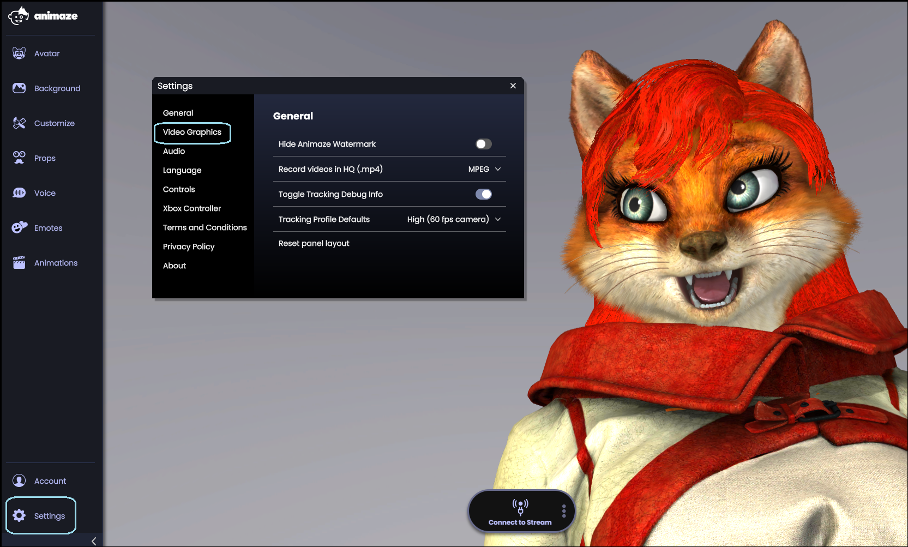
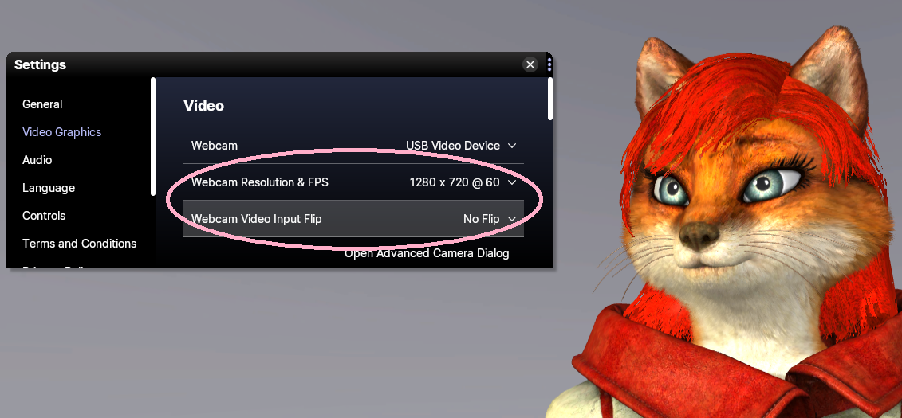
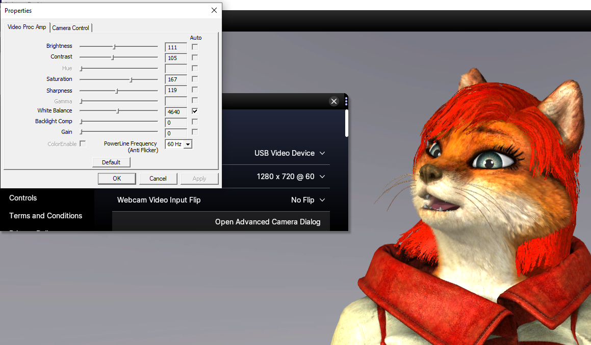
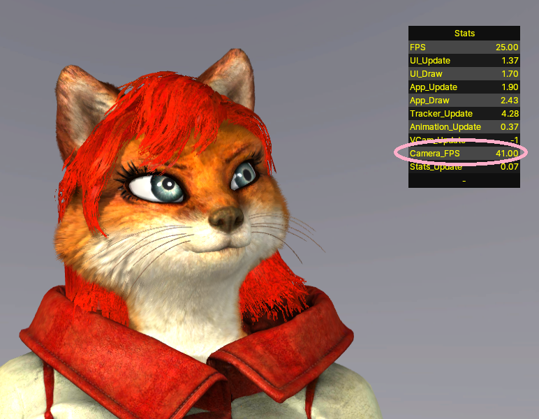
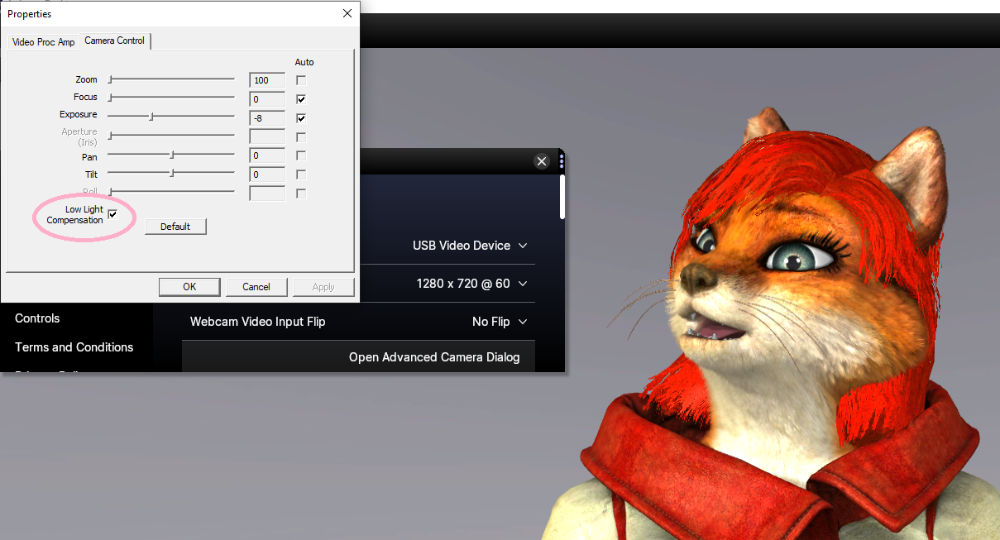
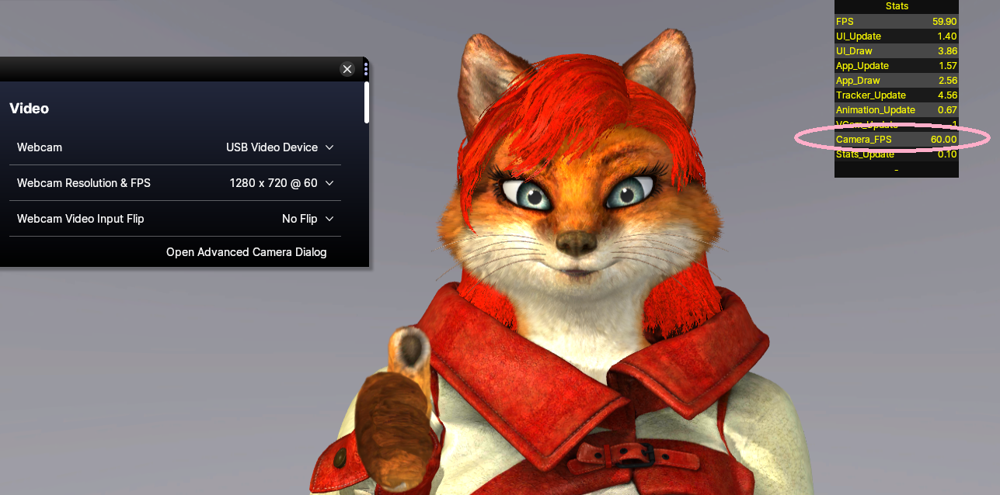
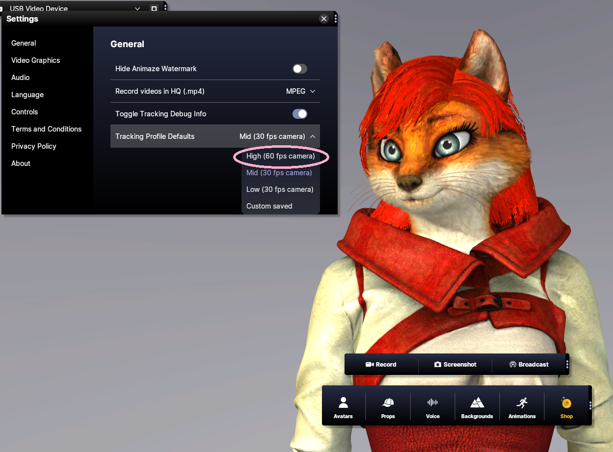

高度なウェブカメラのオプションからウェブカメラを60 FPSに設定するにはどうすればよいですか?
60 FPSでのトラッキングを設定するのはとても簡単です。次の手順で設定します:
まずAnimazeアプリを開きます
Animazeのドロップダウンメニューから「設定」を開きます

「動画のグラフィック」で、お使いのウェブカメラの解像度とFPSの項目が「60 FPS」になっているかを確認します。

そして、Animazeアプリを表示し、キーの組み合わせCtrl + Shift + F3を押します。これにより、パフォーマンストラッカーが画面の右上に表示されるようになります。
パフォーマンストラッカーのカメラのFPSが60 FPSになっていない場合、「動画のグラフィック」タブから「カメラ」ダイアログを開きます。


「カメラコントロール」タブを開き、「低照度補正」をオフにします

これで、パフォーマンストラッカーのカメラのフレームレートで、ウェブカメラのフレームレートが60 FPSになるはずです

最高の品質を得るためには、「設定」 -> 「全般」の順にクリックし、トラッキングのプロファイルを「高(60 fps)」に設定し、アバターのキャリブレーションを行います

ストリーミングをお楽しみください!